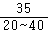
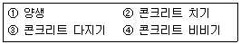
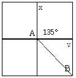

산림기사 (2008-07-27 기출문제)
1과목: 조림학
1. 다음 수종 중 토양의 수분요구도가 가장 높은 수종은?
- 잣나무
- 낙엽송(일본잎갈나무)
- 삼나무
- 소나무
(정답률: 46%)

2. 제벌작업(除伐作業)을 가장 정확하게 설명한 것은?
- 목적 이외의 수종이나 형질이 불량한 임목을 제거하는 것이다.
- 조림 후 임목이 성장하여 밀식된 임목 을 벌채하는 것이다.
- 조림 후 병해충의 피해를 받은 임목만 벌채하는 것이다.
- 맹아력이 강한 수종만을 골라 벌채하 는 것이다.
(정답률: 70%)
3. 우리나라 조림 수종 중 도입 수종은?
- 잎갈나무
- 잣나무
- 소나무
- 사방오리나무
(정답률: 59%)
4. 밑깎기 작업은 보통 어느 시기에 실시하 는가?
- 12 ~ 1월
- 3 ~ 4월
- 6 ~ 8월
- 9 ~ 10월
(정답률: 63%)
5. 잣나무를 폭 2m, 열 2m 간격으로 5ha 를 정방형으로 조림하고자 할 때 필요한 묘목 본수는?
- 7,500본
- 10,000본
- 12,500본
- 15,000본
(정답률: 77%)
6. 산림토양이 산성화됨에에 따라 나타나는 현상에 대한 설명으로 틀린 것은?
- 수소이온이 뿌리에 흡수되어 단백질이 응고되거나, 효소의 작용을 방해한다.
- 토양용액 중에 활성 알루미늄의 농도 가 높아져 묘목생장에 장애가 된다.
- 토양에서 칼륨, 칼슘, 마그네슘 등의 양이온이 용탈된다.
- 토양의 입단구조가 발달하여 토양미생 물의 생육에 유리하게 된다.
(정답률: 65%)
7. 발아시험에서 일정 기간내의 발아립수를 시험에 사용한 전체립수에 대한 백분율로 나타낸 것은?
- 순량율
- 발아력
- 효율
- 용적중
(정답률: 57%)
8. 묘 포지를 경운(밭갈이)작업할 때 나타 나는 효과로 맞는 것은?
- 토양 내 산소량이 감소한다.
- 토양의 보수력을 감소시킨다.
- 토양의 풍화작용을 촉진시킨다.
- 토양 내 탄산가스량은 영향이 없다.
(정답률: 72%)
9. 갱신의 방법에서 인공조림에 의한 방법 이 아닌 것은?
- 파종 조림
- 식수 조림
- 삽목 조림
- 맹아 갱신
(정답률: 73%)
10. 큰 수종을 이식할 때 뿌리돌림을 해서 근주 부근에 세근을 발달시키고 뒤에 근분을 떠서 활착을 돕고자 할 때 수종과 뿌리돌림의 시기가 적합하게 짝지어 진 것은?
- 낙엽수종: 11~2월 상순, 혹은 2~3월 상순
- 상록 침엽수종: 7~8월 상순
- 상록 활엽수종: 한겨울
- 수종마다 큰 차이가 없고 년 중 어느 때든지 적합하다.
(정답률: 46%)
11. 임지의 잠재생산능력 급수가 Ⅴ급인 곳 에 조림해야 할 수종은?(오류 신고가 접수된 문제입니다. 반드시 정답과 해설을 확인하시기 바랍니다.)
- 오리나무
- 낙엽송
- 곰솔
- 현사시나무
(정답률: 25%)
12. 생가지치기를 하여도 상구(傷口) 부후 의 위험성이 거의 없는 수종으로 짝지 어진 것은?
- 자작나무류, 단풍나무류
- 삼나무, 물푸레나무
- 벚나무류, 느릅나무류
- 편백, 포플러류
(정답률: 63%)
13. 건생식물의 일반적인 형태적 특성으로 틀린 것은?
- 각피층이 얇다.
- 잎의 크기가 작거나, 경엽(硬葉)을 가 지고 있다.
- 세포간극이 축소된다.
- 표면에 왁스층이 잘 발달되어 있다.
(정답률: 52%)
14. 1년생 묘목을 상체하는데 적합하지 않 는 수종은?
- 편백
- 삼나무
- 소나무류
- 참나무류
(정답률: 43%)
15. 우리나라 한 대림에서 관찰할 수 없는 수종은?
- 가문비나무
- 주목
- 단풍나무
- 잣나무
(정답률: 68%)
16. 관다발 형성층의 시원세포가 수피 방향 으로 분열하여 형성되며, 사부유 조직, 사부섬유, 반세포 등의 복합조직으로 구성되는 것은?
- 체관부
- 물관부
- 수피층
- 측아
(정답률: 75%)
17. 순림에 관한 특징 설명으로 옳은 것은?
- 숲의 구성이 단조로워서 병충해, 풍해 의 저항력이 강하다.
- 침엽수로만 형성된 순림에서는 임지의 악화가 초래되는 일이 없다.
- 경제적으로 가치있는 나무를 대량 생 산할 수 있다.
- 입지(立地)를 완전하게 이용할 수 있 다.
(정답률: 79%)
18. 종자의 생리적 휴면을 유지시키는 호르 몬은?
- 옥신(auxin)
- 지베렐린(gibberellin)
- 사이토키닌(sytokinin)
- 아브시스산(abscisic acid)
(정답률: 72%)
19. 개화한 해에는 종실의 거의 자라지 않 고, 다음해 가을에 빨리 자라서 성숙하는 나무는?
- 떡갈나무
- 상수리나무
- 신갈나무
- 졸참나무
(정답률: 58%)
20. 총광합성량은 A, 호흡량을 R, 물질 순 생산량을 N 이라고 할 때, 이들 간의 관계식을 바르게 나타낸 것은?
- A + B = N
- A + B = R
- R × A = N
- A - R = N
(정답률: 69%)
2과목: 산림보호학
21. 밤나무 줄기마름병의 방제 방법으로 거 리가 먼 것은?
- 동해 및 상해에 주의한다.
- 줄기를 침해하는 해충을 구제한다.
- 중간기주 식물을 제거한다.
- 저항성 품종을 심는다.
(정답률: 67%)
22. 산불의 발생형태 중 비화(spot fire)하 기 쉽고, 한번 일어나면 불 끄기가 힘들어 큰 손신을 가져 오는 것은?
- 지중화
- 지표화
- 수간화
- 수관화
(정답률: 70%)
23. 낙엽채취가 삼림에 미치는 영향이 아닌 것은?
- 낙엽채취는 생태계내의 균형을 깨트린 다.
- 낙엽채취는 토양의 양료를 박탈한다.
- 낙엽채취는 회복하기 어려운 삼림의 황폐를 초래한다.
- 낙엽채취는 임내 청소를 깨끗이 하므 로 삼림에 좋다.
(정답률: 79%)
24. 담배장님노린재에 의해 매개 전염되는 수병은?
- 대추나무 빗자루병
- 오동나무 빗자루병
- 뽕나무 오갈병
- 벚나무 빗자루병
(정답률: 70%)
25. 수병에 대한 기주와 중간기주가 모두 옳은 것은?
- 소나무 잎녹병: 소나무와 참나무
- 잣나무 털녹병: 잣나무와 낙엽송
- 포플러 잎녹병: 포플러와 까치밥나무
- 향나무 녹병: 향나무와 배나무
(정답률: 68%)
26. 식물 바이러스의 전염에 큰 역할을 하 는 곤충의 종류 중 가장 많은 종류는 다음의 어느 과(科)의 곤충인가?
- 진딧물과
- 가루깍지벌레과
- 노린재과
- 메뚜기과
(정답률: 50%)
27. 성충으로 월동하는 곤충은?
- 밤나무순혹벌
- 소나무좀
- 독나방
- 솔잎혹파리
(정답률: 65%)
28. 토양 전염을 하지 않는 것은?
- 뿌리혹병
- 모잘록병
- 오동나무 탄저병
- 자주빛날개무늬병
(정답률: 59%)
29. 각종 해충의 생물적 방제에 이용되는 것이 아닌 것은?
- 기생곤충
- 훈증제
- 포충동물
- 병원미생물
(정답률: 83%)
30. 다음 중 종실을 가해하는 해충은?
- 소나무순명나방
- 매미나방
- 복숭아명나방
- 소나무좀
(정답률: 83%)
31. 오염원으로부터 직접배출되는 1차 대기 오염물질이 아닌 것은?
- 황산화물
- 질소산화물
- 분진
- 오존
(정답률: 82%)
32. 미국흰불나방은 북아메리카가 원산지이다. 우리나라에 최초로 피해를 나타낸 시기는?
- 1948년 전후
- 1958년 전후
- 1968년 전후
- 1978년 전후
(정답률: 66%)
33. 수목에 발생하는 병의 일반적인 표징이 아닌 것은?
- 그을음병의 그을음
- 위축
- 버섯
- 균사체
(정답률: 56%)
34. 임목이 작물에 미치는 알렐로파시 (allelopathy, 타감) 효과가 적은 나무는?
- 흑호두나무
- 소나무
- 참나무류
- 단풍나무
(정답률: 24%)
35. 일반적으로 액체보다 가루약을 주입하 며, 살균제나 살충제보다 영양제 및 미량원소를 주입하는 데 가장 좋은 수간주사 방법은?
- 중력식 수간주입법
- 미세압력식 수간주입법
- 삽입식 수간주입법
- 흡수식 수간주입법
(정답률: 57%)
36. 우리나라에서 서식하고 있는 포유류 중 천연기념물이 아닌 것은?
- 수달
- 늑대
- 물범
- 산양
(정답률: 76%)
37. 식엽성 해충이 아닌 것은?
- 미국흰불나방
- 잣나무넓적잎벌
- 박쥐나방
- 오리나무잎벌레
(정답률: 75%)
38. 대기오염에 의한 수목피해의 일반적인 설명으로 틀린 것은?
- 높은 온도에서 피해가 더욱 크다.
- 높은 광도에서 피해가 더욱 크다.
- 높은 상대습도에서 피해가 더욱 크다.
- 영양원이 많을 때 피해가 더욱 크다.
(정답률: 75%)
39. 수목의 경제적인 피해를 초래하는 해충 의 최고밀도를 나타내는 경제적 가해수준이 가장 낮은 해충은?
- 측백나무하늘소
- 흰불나방
- 솔잎혹파리
- 밤바구미
(정답률: 64%)
40. 다음 야생동물 중 식충목(食蟲目)에 해 당하는 것은?
- 곰
- 멧돼지
- 사슴
- 두더지
(정답률: 75%)
3과목: 임업경영학
41. 다음의 설명 중 틀린 것은?
- 윤벌기란 보속작업에 있어서 한 작업 급 내의 모든 임분을 1순벌하는데 필 요한 기간이다.
- 회귀년이란 택벌작업에 있어서 일단 택벌된 벌구가 또다시 택벌될 때 까지 의 기간이다.
- 벌기령과 벌채령은 일치 할 수도 있다.
- 회귀년이 길때는 단위면적에서 벌채될 재적이 적다.
(정답률: 71%)
42. 매년 240만원씩 순수익을 얻을 수 있 는 산림을 3,600만원에 구입하였을 때 의 년간 손익은? (단, 년 이율은 6%이다.)
- 손해 24만원
- 이익 24만원
- 손해 400만원
- 이익 400만원
(정답률: 37%)
43. 수간석해 시 계산되지 않는 것은?
- 재적
- 평균성장량
- 연년성장량
- 영급별 중량
(정답률: 59%)
44. 이령임분의 임령을 표시하는 방법이

일 때 분자부분의 '35'는 무엇을 의미하는가?- 임분 내의 임령범위
- 최대의 임령
- 추정의 평균임령
- 현재의 측정임령
(정답률: 61%)
45. 다음 중 지황조사의 항목이 아닌 것은?
- 기후
- 지세(地勢)
- 입목도
- 지위(地位)
(정답률: 44%)
46. 자연휴양림의 수림 공간 형성 특성 중 레크레이션 이용밀도 및 활동 자유도가 낮은 형은?
- 열개림형
- 소생림형
- 산개림형
- 밀생림형
(정답률: 63%)
47. 다음 중 산림의 휴양기능으로 가장 거 리가 먼 것은?
- 국민의 보건 휴양 증진
- 정서함양
- 레크레이션적 가치 창출
- 수원함양
(정답률: 71%)
48. 사유림을 소유규모에 따라 농가임업, 부업적 임업, 겸업적임업, 주업적 임업등으로 나눌 수 있다. 경영대상인 산림면적을 기준으로 하여 볼 때 우리나라 사유림의 핵심을 이루는 경영형태는?
- 농가임업과 부업적 임업
- 부업적 임업과 겸업적 임업
- 겸업적 임업과 주업적 임업
- 농가임업과 주업적 임업
(정답률: 42%)
49. 자본장비도와 자본효율의 개념을 임업 에 도입할 때 자본장비도에 해당하는 것은?
- 입목축적
- 생장률
- 소득
- 노동
(정답률: 66%)
50. 임지의 평가에서 똑같은 산림경영패턴 이 영구히 반복된다는 것을 가정한 평가법은?
- 임지비용가법
- 임지기망가법
- 임지예상가법
- 임지매매가법
(정답률: 66%)
51. 다음 작업종 중 경관 및 생태계 보존에 가장 유리한 작업종은?
- 골라베기 작업
- 모두베기 작업
- 왜림작업
- 모수작업
(정답률: 72%)
52. 야영참가인이 4,000명, 야영 참가 가구 수가 1,000가구, 야영횟수가 3회, 그리 고 평균 숙박일수가 3일인 경우에 야영 수요는?
- 3000인
- 9,000인
- 12,000인
- 36,000인
(정답률: 28%)
53. 다음 중 휴양지의 시설적 수용력에서 가장 중요시 되는 영향인자는?
- 동식물의 개체수
- 프라이버시의 보장
- 이용자간 조우 횟수
- 야영장을 이용하는 사람수
(정답률: 50%)
54. 임지를 취득한 후 조림 등 임목 육성에 알맞은 상태로 개량하는데 소요되는 모 든 비용의 후가에서 그 동안 수입의 후가를 공제한 가격을 무엇이라 하는가?
- 임지비용가
- 임지기망가
- 임목기망가
- 임지매매가
(정답률: 69%)
55. 이용객의 안전을 증가시키기 위해 관리 자가 수행해야 할 사항으로 적합하지 않는 것은?
- 모든 이용객의 잠재적인 위험요소를 인식하도록 할 것
- 모든 이용객이 규칙과 규율을 지키도 록 할 것
- 이용객에게 응급사항에 대한 대처방 안을 강구하도록 안전교육을 실시 할 것
- 발생한 사고에 대한 철저한 검토와 분석을 통해 재발을 방지 할 것
(정답률: 54%)
56. 국유림경영계획에서는 산림을 6가지 기 능으로 구분하여 관리하고 있다. 다음 중 생태ㆍ 문화 및 학술적으로 보호할 가치가 있는 자연 및 산림을 보호ㆍ보전하기 위한 산림의 기능을 무엇이라 하는가?
- 자연환경보전기능
- 생활환경보전기능
- 수원함양기능
- 산지재해방지기능
(정답률: 61%)
57. 다음 중 임목의 가격을 사정하기 위해 (주벌수확의 경우)직접 조사해야 할 항목이 아닌 것은?
- 총재적의 재종별 재적
- 조재율 또는 이용율
- 재종별 시장가격
- 임지현황
(정답률: 57%)
58. 다음 중 임업조수익에 해당하는 것은?
- 임업현금지출
- 감가상각액
- 미처분 임산물 증강액
- 임업생산 자재 재고 감소액
(정답률: 63%)
59. 임가(林家)의 소비경제가 임업에 의하 여 지탱되는 정도를 나타낸 것은?
- 임업순수익
- 임업의존도
- 임업소득률
- 임업소득가계충족률
(정답률: 47%)
60. 소나무림 40년생의 임목 재적100m3를 매각하려고 한다. 소나무 임목 이용율은 70%로, 1m3당 평균원목시장가격은 60,000원, 조재비는 10,000원, 집재ㆍ운재비가 20,000원이고 이율이 4%, 자본회수 기간이 4개월일 때 소나무림의 임목가는 얼마인가?
- 약 154만원
- 약 153만원
- 약 152만원
- 약 151만원
(정답률: 42%)
4과목: 임도공학
61. 임도망 계획 시 고려하지 않아도 되는 사항은?
- 신속한 운재와 비용을 줄인다.
- 임목 벌채량을 적게 한다.
- 운반량의 탄력성이 있도록 한다.
- 목재운반에 일관성이 있어야 한다.
(정답률: 73%)
62. 임도를 설계하고자 할 때 가장 먼저 해 야 할 일은?
- 예측
- 답사
- 설계서 작성
- 예비조사
(정답률: 86%)
63. 임도노선의 곡선설정시 사용되는 방법 중 해당되지 않는 것은?
- 사출법
- 진출법
- 교각법
- 편각법
(정답률: 74%)
64. 임도 노선을 도상에 배치할 때 노선 통 과에 유리한 지점과 불리한 지점을 도면에 미리 표시해 두는 것이 효과적이다. 다음 중 노선배치 시 불리한 지점(negative point)으로 볼 수 없는 곳은?
- 늪지대
- 암석지
- 여울목
- 소유경계
(정답률: 40%)
65. 견고한 지반 위에 기초콘크리트를 직접 시공하고 이 기초콘크리트에 하중이 작 용하도록 만든 기초로서 직접(直接)기초라고도 불리는 것은?
- 얕은기초
- 확대기초
- 말뚝기초
- 깊은기초
(정답률: 38%)
66. 산악지 임도에서 종단물매 10%의 구간 에 곡선부의 외쪽물매를 8%로 설치하고자 할 때 합성물매의 값은?
- 9.6%
- 12.8%
- 18.0%
- 24.8%
(정답률: 63%)
67. 토공재로로 쓰이는 토양에 관한 설명으 로 틀린 것은?
- 세립토는 대체로 배수가 양호하여 흙 쌓기 재료로서 안성마춤이다.
- 세림토는 실트, 점토, 점성토를 말한 다.
- 조립토는 흙쌓기(성토부) 심부에선 전 단강도도 크고 배수가 양호하여 활동의 위험이 없다.
- 조립토는 자갈과 모래가 주성분이어서 점착성이 없는 토양이다.
(정답률: 62%)
68. 임도상에 설치하는 대피소의 설치기준 중 유효길이는 몇 미터 이상으로 하는가?
- 5m 이상
- 15m 이상
- 25m 이상
- 35m 이상
(정답률: 74%)
69. 돌쌓기 공법 중 직고가 약 1.5m의 성 토 시 메쌓기 구조물의 표준 물매는?
- 1: 0.3
- 1: 0.5
- 1: 0.6
- 1: 0.8
(정답률: 64%)
70. 교각(θ) = 80°, 곡선반지름(R) = 20m 일 때 안전시거는 약 얼마인가?
- 28m
- 38m
- 25m
- 35m
(정답률: 38%)
71. 산림관리기반시설의 설계 및 시설기준 에 따른 임도의 곡선반경이 13m 이상 ~ 14m 미만일 때 곡선부 너비의 확대 기준은?
- 2.25m 이상
- 2.00m 이상
- 1.75m 이상
- 1.50m 이상
(정답률: 55%)
72. 다음 중 식생 군락 등의 대상물 판별에 가장 중요한 것은?
- 색조
- 음영
- 질감
- 형상
(정답률: 53%)
73. 임업토목시공용 전압기계 중 로드롤러 (road roller)의 종류가 아닌 것은?
- 머캐덤롤러
- 탠덤롤러
- 탬핑롤러
- 진동롤러
(정답률: 30%)
74. 반출할 목재의 길이가 20m인 전간목을 너비가 4m인 도로에서 트레일러로 운 반 할 때 최소곡선반지름은 몇 m로 하 여야 하는가?
- 20m
- 25m
- 30m
- 35m
(정답률: 66%)
75. 임도에서 콘크리트옹벽의 제작 과정 순 서로 바른 것은?

- ④ → ② → ③ → ①
- ① → ③ → ② → ④
- ① → ② → ③ → ④
- ② → ③ → ④ → ①
(정답률: 74%)
76. 임도시공상의 안전관리와 관계가 적은 것은?
- 공사비 및 공사기간에 대하여 무리가 없도록 한다.
- 광사관리는 적절하고, 철저하게 하여야 하며, 정확한 지도감독이 필요하다.
- 기계의 점검 및 정비를 철저히 하고, 취급자 이외에는 접촉을 금지한다.
- 공사 중 안전책임자는 작업자 중 가장 현장경험이 풍부한 자에 한하며, 산림 청장이 임명한다.
(정답률: 79%)
77. 사리도의 유지관리에 대한 설명으로 옳 은 것은?
- 횡단배수구의 물매는 5~6%를 유지하 도록 한다.
- 비가 온 후 습윤한 상태에서 노면 정 지작업은 하지 않는다.
- 방진처리에 염화칼슘, 폐유 및 타르는 사용하지 않는다.
- 노면의 제초나 예불은 1년에 한번만 한다.
(정답률: 60%)
78. 수준 측량 기고식 야장기입에서 지반고 를 구하는 식으로 옳은 것은?
- 기계고(I.H) + 후시(B.S)
- 기계고(I.H) - 후시(B.S)
- 기계고(I.H) - 전시(F.S)
- 기계고(I.H) + 전시(F.S)
(정답률: 73%)
79. 어떤 측점에서부터 차례로 측량을 하여 최후에 다시 출발한 측점으로 되돌아오 는 측량방법으로 소규모의 단독적인 측량 때 많이 이용되는 트래버스법은?
- 폐합트래버스
- 결합 트래버스
- 개방 트래버스
- 다각형 트래버스
(정답률: 76%)
80. AB 측선의 거리가 100m, 방위각이 135° 일 때 위거 및 경거는?

- 위거 = -70.71m, 경거 = 70.71m
- 위거 = 70.71m, 경거 = -70.71m
- 위거 = -86.60m, 경거 = 86.60m
- 위거 = 86.60m, 경거 = -86.60m
(정답률: 45%)
5과목: 사방공학
81. 암석산지나 노출된 암벽의 녹화용 방법 으로 사용되는 새집공법(巢箱工)에 사용하기 가장 부적합한 수종은?
- 병꽃나무
- 눈향나무
- 굴참나무
- 담쟁이덩굴
(정답률: 80%)
82. 일반적으로 돌골막이 돌쌓기 높이는 얼 마 이내로 하는가?
- 1m 이내
- 2m 이내
- 3m 이내
- 5m 이내
(정답률: 59%)
83. 구곡막이(골막이)에 대한 설명으로 틀 린 것은?
- 시공목적은 사방댐과 유사하다.
- 대수측과 반수측을 모두 축설한다.
- 사방댐에 비해 계류상에서 시공위치는 약간의 차이가 있다.
- 골막이의 양쪽귀는 견고한 지반까지 파내지 않아도 된다.
(정답률: 78%)
84. 야계사방에서 유량(m3/sec)을 계산하는 식으로 맞는 것은?(단, C는 유출계수, I는 강우강도, A는 유역면적이다.)
- 0.2778 C ㆍ I ㆍ A
- 0.02778 C ㆍ I ㆍ A
- 0.002778 C ㆍ I ㆍ A
- 0.0002778 C ㆍ I ㆍ A
(정답률: 71%)
85. 산림의 물수지(水收支)를 계산 할 때 필요하지 않은 인자는?
- 유출
- 포화
- 강수
- 증발
(정답률: 63%)
86. 산복사방에서 비탈다듬기로 생긴 토사 의 활동을 방지하기 위해 설치하는 것은?
- 누구막이
- 선떼붙이기
- 땅속흙막이공작물
- 사방댐
(정답률: 80%)
87. 산지비탈면에 수평으로 연속적인 계단 을 만들고 떼를 세워 붙이는 선떼붙이기 시공을 하려고 한다. 선떼붙이기 시공표준에서 떼사용매수(매수/m)가 옳게 짝지어진 것은? (단, 1m를 기준으로 떼 크기는 40cm × 25cm 이다.)
- 1급: 3.75
- 3급: 6.25
- 5급: 7.5
- 8급: 12.5
(정답률: 80%)
88. 토목재료로서의 목재의 성질이 아닌 것 은?
- 함수량의 변화에 따라 변형이 생기기 쉽다.
- 가볍고 가공성이 좋다.
- 중량에 비해 강도가 크다.
- 열전도율이 높다.
(정답률: 75%)
89. 사방댐의 설계에서 시공적지로 부적합 한 곳은?
- 상류부가 넓고 댐자리는 좁은곳
- 계상 및 양안에 암반이 존재하는 곳
- 지류의 합류점 부근에서는 합류점의 상류부
- 붕괴지의 하부 또는 다량의 계상퇴적 물이 존재하는 지역의 직하류부
(정답률: 52%)
90. 비탈파종공법에서 한 종류의 발생기대 본수는 총 발생기대본수의 몇 %로 이하가 되지 않도록 파종량을 산정해야 하는가?
- 10%
- 20%
- 30%
- 40%
(정답률: 63%)
91. 사방용 수종(樹種)의 특성이 아닌 것 은?
- 생장력이 왕성하며 쉽게 번무할 것
- 뿌리의 자람이 좋을 것
- 척악지의 조건에 적응성이 강할 것
- 토양 수분 요구도가 높을 것
(정답률: 80%)
92. 사방댐에 대한 설명에 해당하지 않는 것은?
- 사방댐은 토사력을 주로 저사(貯砂)한 다.
- 가장 많이 이용되는 것은 중력식 콘크 리트 사방댐이다.
- 사방댐은 계상물매를 완화하여 계류의 침식을 방지한다.
- 한 개의 높은 사방댐의 대용으로 낮은 사방댐을 연속적으로 만들 수 없다.
(정답률: 75%)
93. 절토사면 중 토질이 모래층인 사면에 대한 설명으로 옳지 않은 것은?
- 절토공사 직후에는 단단한 편이나 건 조하면 푸석푸석해지고 붕락되기 쉽다.
- 침식에 대단히 약하여 식생이 착근(着根)하기 전에 유실될 가능성이 높다.
- 토양유실을 방지할 목적으로, 보통흙으 로 전면적 객토를 해주어야 한다.
- 적용 공법은 새집붙이기 공법이 가장 적절하다.
(정답률: 75%)
94. 사방댐의 방수로 크기를 결정하는데에 직접적으로 관계가 없는 것은?
- 암반상태
- 집수면적
- 황폐상황
- 강수량
(정답률: 46%)
95. 유역면적이 50km2이고, 비유량(比流量) 이 12(m3/sec)/km2일때 최대홍수유량은?
- 300 m3/sec
- 600 m3/sec
- 900 m3/sec
- 1200 m3/sec
(정답률: 71%)
96. 전사구의 후방 모래를 고정하여 그 표 면을 안정시키고, 식재목이 잘 생육할 수 있도록 환경을 조성하기 위해 실시하는 공법은?
- 구정바자얽기
- 모래덮기공법
- 퇴사울타리공법
- 정사울세우기공법
(정답률: 72%)
97. 산사태 및 산붕과 비교한 땅밀림 침식 의 설명으로 옳은 것은?
- 20° 이상의 급경사지에서 발생한다.
- 침식의 이동속도가 10m/day 이상으로 빠르다.
- 침식의 규모가 1ha 이하로 작다.
- 토괴의 흐트러짐이 적고 원형을 보존 하며 이동한다.
(정답률: 64%)
98. 산림환경보전공사용 재료의 설명이 아 닌 것은?
- 산지에 버드나무류, 주목 등을 식생하 면 잘 생육한다.
- 토목재료는 내구성, 내마모성이 커야한 다.
- 석재 중 가격이 고가이나 미관을 요하 는 석축의 메쌓기에는 마름돌을 사용 한다.
- 아까시나무, 싸리나무 등은 종자로 파 종한다.
(정답률: 65%)
99. 황폐 계천 사방공작물 중 토사유과구역 에 주로 시공하는 공작물은?
- 모래막이
- 사방댐
- 흙막이
- 바자얽기
(정답률: 35%)
100. 트랙터의 발진시 뒷바퀴 중 한 쪽 바퀴가 미끄러운 곳에 빠지면 그 바퀴는 공회전으로 탈출할 수가 없게 된다. 다음 중 어는 부속품의 작용 때문인가?
- 트렌스밋션
- 클러치
- 차축
- 디퍼렌셜 기어
(정답률: 42%)